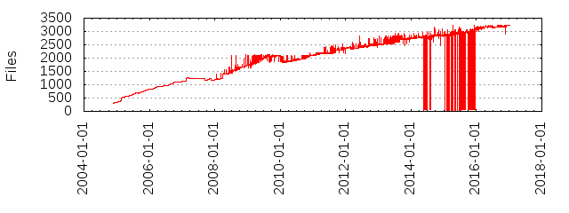

Files
- Total files
- 3232
- Total lines
- 378324
- Average file size
- 5512.43 bytes
| Extension | Files (%) | Lines (%) | Lines/file |
|---|
| 99 (3.06%) | 2287 (0.60%) | 23 |
| builder | 19 (0.59%) | 48 (0.01%) | 2 |
| coffee | 24 (0.74%) | 1187 (0.31%) | 49 |
| css | 24 (0.74%) | 1635 (0.43%) | 68 |
| dat | 1 (0.03%) | 30714 (8.12%) | 30714 |
| dtd | 1 (0.03%) | 1 (0.00%) | 1 |
| erb | 425 (13.15%) | 1954 (0.52%) | 4 |
| erb~ | 4 (0.12%) | 0 (0.00%) | 0 |
| gemspec | 11 (0.34%) | 306 (0.08%) | 27 |
| gif | 17 (0.53%) | 185 (0.05%) | 10 |
| gz | 4 (0.12%) | 532 (0.14%) | 133 |
| html | 28 (0.87%) | 206 (0.05%) | 7 |
| ico | 2 (0.06%) | 3 (0.00%) | 1 |
| javascript | 1 (0.03%) | 0 (0.00%) | 0 |
| jpg | 8 (0.25%) | 344 (0.09%) | 43 |
| js | 39 (1.21%) | 9704 (2.56%) | 248 |
| json | 3 (0.09%) | 65 (0.02%) | 21 |
| lock | 1 (0.03%) | 437 (0.12%) | 437 |
| log | 1 (0.03%) | 1 (0.00%) | 1 |
| mab | 1 (0.03%) | 0 (0.00%) | 0 |
| md | 74 (2.29%) | 49595 (13.11%) | 670 |
| png | 62 (1.92%) | 9817 (2.59%) | 158 |
| rake | 16 (0.50%) | 864 (0.23%) | 54 |
| raw | 2 (0.06%) | 2 (0.00%) | 1 |
| rb | 2153 (66.62%) | 304433 (80.47%) | 141 |
| rdoc | 11 (0.34%) | 985 (0.26%) | 89 |
| ru | 2 (0.06%) | 8 (0.00%) | 4 |
| ruby | 2 (0.06%) | 4 (0.00%) | 2 |
| sql | 1 (0.03%) | 48 (0.01%) | 48 |
| styles | 1 (0.03%) | 0 (0.00%) | 0 |
| tt | 28 (0.87%) | 515 (0.14%) | 18 |
| txt | 6 (0.19%) | 5 (0.00%) | 0 |
| y | 1 (0.03%) | 50 (0.01%) | 50 |
| yaml | 1 (0.03%) | 231 (0.06%) | 231 |
| yml | 157 (4.86%) | 3609 (0.95%) | 22 |
| zoo | 2 (0.06%) | 6 (0.00%) | 3 |